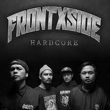
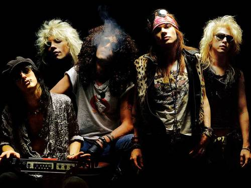

Hardcore Music
Underground Music
Aliran musik bawah tanah atau yang saat ini lebih dikenal dengan sebutan musik undergroundmerupakan aliran musik yang di dalamnya terdapat beberapa subgenre. Jenis musik ini bergerak secara independen dan memiliki perbedaan dengan genre musik yang sedang populer saat ini.
Beberapa sub genre yang terdapat di dalam musik underground adalah punk, metal, rock, hardcore. Musik underground memang diidentikkan dengan jenis musik yang keras, tapi pada kenyataannya istilah ‘underground’ digunakan karena jenis musik ini mencerminkan nilai-nilai kemandirian dan tidak bergantung oleh pihak manapun dalam menghasilkan karya maupun dalam merilis karya.
Musik underground bukan hanya dinikmati sebagai hiburan saja. Aliran musik ini juga dapat berfungsi sebagai kritik politik, sosial, dan ekonomi. Musik ini difungsikan oleh para pelaku musiknya untuk menyinggung kondisi politik, kehidupan sosial di suatu negara. Pergerakan musik underground di Indonesia pada tahun 90-an juga memiliki andil dalam proses transformasi kondisi politik di negara ini. Pada masa itu, pergerakan musik ini aktif terlibat dalam gerakan mahasiswa di tahun 90-an dan berhasil menggulingkan pemerintahan Soeharto.
Di era modern seperti saat ini, para pelaku musik undergroundmempromosikan hasil karya mereka melalui media sosial seperti Instagram, Twitter, Soundcloud, TikTok, Facebook, dan lain-lain. Banyaknya medium dan wadah yang mendukung untuk melahirkan karya, membuat musik ini memiliki perkembangan yang semakin cepat. Diharapkan dengan perkembangan musik underground yang pesat ini juga dapat melahirkan banyak musisi-musisi dan karya-karya yang berkualitas agar dapat lebih mudah untuk dinikmati oleh masyarakat dari berbagai kalangan
Band Underground
frontXside
 Linkin Park
Linkin Park Velvet Underground
Velvet Underground Burger Kill
Burger KillGun N'Roses